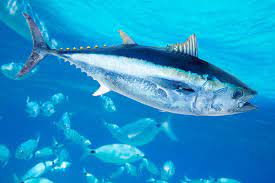

A tuna is a saltwater fish that belongs to the tribe Thunnini, a subgrouping of the Scombridae (mackerel)
family. The Thunnini comprise 15 species across five genera,[2] the sizes of which vary greatly, ranging
from the bullet tuna (max length: 50 cm or 1.6 ft, weight: 1.8 kg or 4 lb) up to the Atlantic bluefin tuna
(max length: 4.6 m or 15 ft, weight: 684 kg or 1,508 lb), which averages 2 m (6.6 ft) and is believed to
live up to 50 years.
Tuna, opah and mackerel sharks are the only species of fish that can maintain a body temperature higher than
that of the surrounding water. An active and agile predator, the tuna has a sleek, streamlined body, and is
among the fastest-swimming pelagic fish – the yellowfin tuna, for example, is capable of speeds of up to 75
km/h (47 mph).[3][4] Greatly inflated speeds can be found in early scientific reports and are still widely
reported in the popular literature.[4]
Found in warm seas, the tuna is commercially fished extensively as a food fish, and is popular as a
bluewater game fish. As a result of overfishing, some tuna species, such as the southern bluefin tuna, are
threatened with extinction.